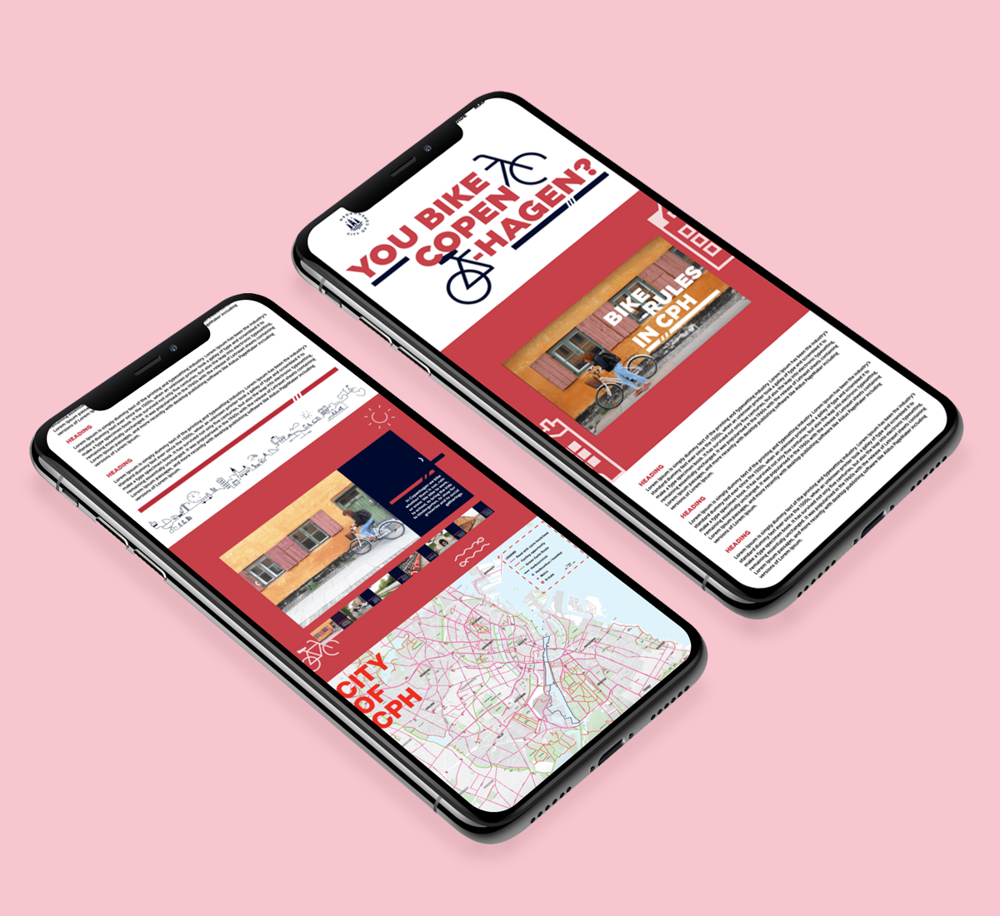
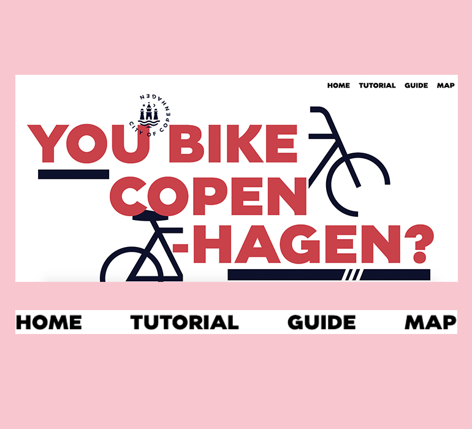
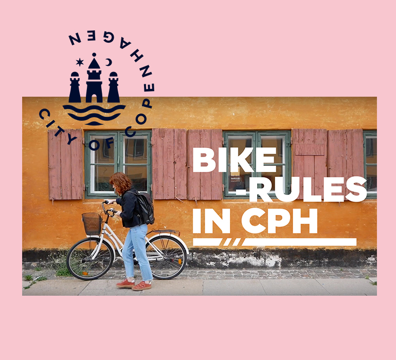
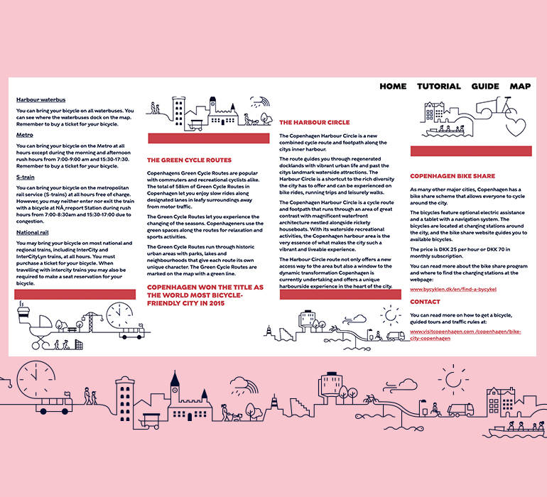
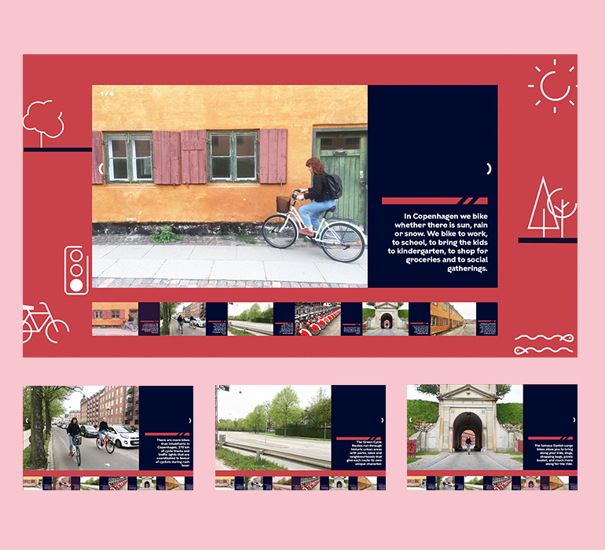
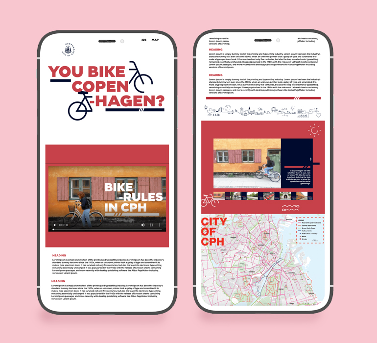

You Bike CPH

SKILLS
PS, HTML, CSS, PR
DESCRIPTION
We were in charged of making a guide for the Copenhagen Bike Guide for tourists. The guide needed to include a instructional video and additional information about cycling in Copenhagen based on the I Bike CPH Brochure. The site had to follow the KBH's design guide provided by us by the client. I was tasked with the design department therefore I created the XD prototype and making the site itself while my teammates created the video.
This is the final website for our project.Both the aethetics for the website and video match really well together so it created a nice flow and unity. Overall, I think we met our goal of delivering a professional and informative guide for newcomers in Copenhagen.
LINK
http://tiffvoli.com/you-bike-cph/
-

Banner | Menu
I stuck with the same design as my prototype with the deconstructive style and KBH colour scheme. I chose to make the menu bar sticky so that it would follow the user wherever they scroll. -

Thumbnail
We made small tutorial on the basic rules of biking and I desgined this thumbnail for the video. I used the same font and deconstructed style for the title. I chose white text and all caps so it could stand out from the colourful background of Nyboder. -

Information
Since the site was supposed to a guide, I wanted to make it informative so that the users would find everything on here without any confusion. I added the frise provided by KBH kommune in between the text so that it's easier to read. -

Image Gallery
This was the only new thing I added into the website since we thought it wouldn't make sense if we just put in the images. Therefore, I created a gallery with images corresponding to a few useful facts about biking in Copenhagen. -

Mobile Version
>I made the website responsive to all devices using "vw" unit to make all the sizes stay relative to 1% of the width of the viewport. Therefore, the website can be resized while still maintaining its ratio.